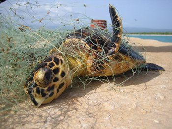
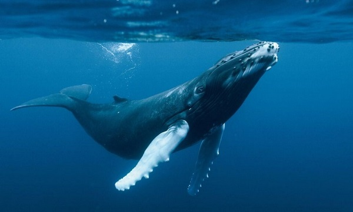
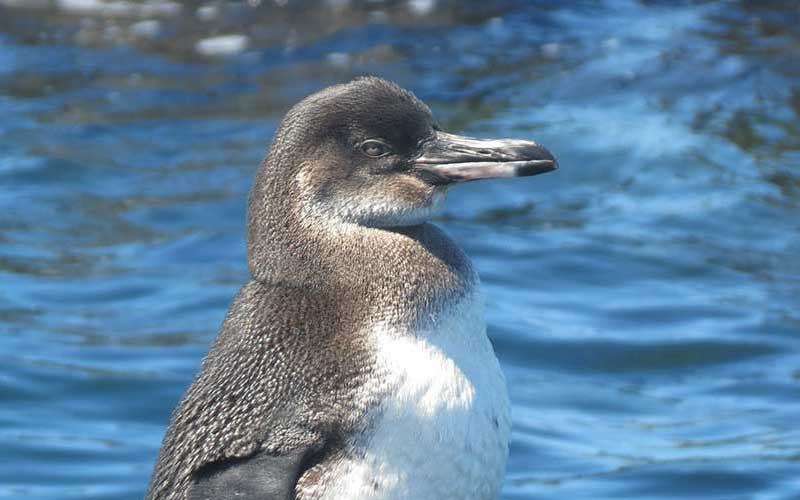
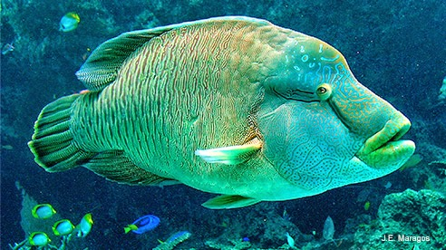
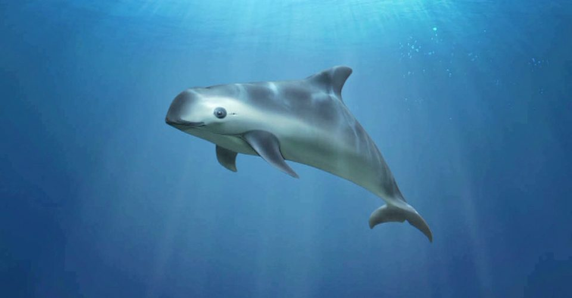

Tortuga Carey Especie de tortuga marina que se encuentra en peligro crítico de extinción debido a las prácticas de pesca humanas. Se distingue fácilmente de otras tortugas marinas por su pico puntiagudo y curvo con una prominente mandíbula superior. En países como China y Japón, las han cazado por su carne, considerada un manjar.
La ballena azul es otro de los animales marinos en peligro de extinción. Es el animal conocido más grande que jamás haya poblado la Tierra. Estos majestuosos mamíferos marinos dominan los océanos con sus 30 metros de longitud y sus 180 toneladas de peso. Solo su lengua llega a pesar como un elefante, y su corazón, como un automóvil.
Pinguino de las Galapago Este pingüino, endémico del archipiélago que le da nombre, es la especie de pingüino que vive más al norte del mundo y uno de los pingüinos más pequeño del planeta. Es increíblemente aerodinámico ya que puede alcanzar nadando velocidades de hasta 35 km por hora, casi veinte veces más rápido que un humano.
Pez Napoleon Es un animal marino que se suele encontrar en arrecifes de coral como los de las islas Maldivas, en las faldas de los canales y en arrecifes de lagunas con profundidades de hasta 100 metros. El enorme tamaño de los peces adultos se hace aún más imponente por su característica física más reseñable, la prominente joroba que tienen en la frente y de la que se ganan su nombre común.
Vaquita Marina Es uno de los cetáceos más pequeños del mundo, endémico de aguas mexicanas y que habita en la reserva de la biósfera del alto golfo de California, único lugar del mundo donde habitan. Con un tamaño de 150 cm y un peso de hasta 50 kg, la vaquita marina es, a diferencia de los delfines, un animal tímido. No salta sobre la superficie del mar, sino simplemente emerge algunos segundos para tomar aire.
